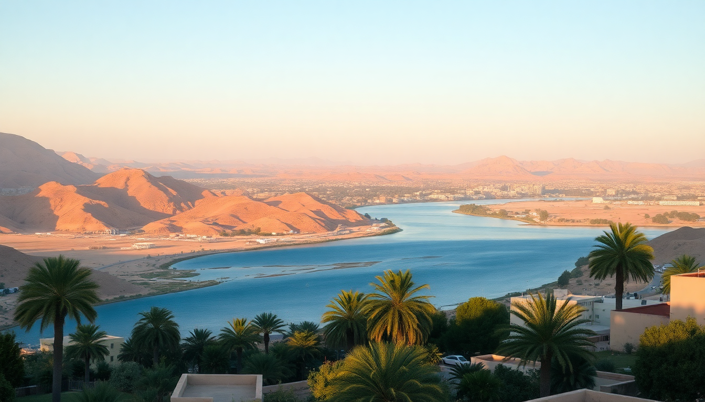

10 Days in Egypt: Cairo, Luxor & Hurghada Itinerary

I spent ten days bouncing between Cairo’s chaos, Luxor’s ancient corridors, and Hurghada’s turquoise water. The trip felt like three separate vacations in one—and that’s exactly why it works. Here’s how I actually did it, what I’d skip, and what I’d do again in a heartbeat.
How do you get from Cairo to Luxor and Luxor to Hurghada?
I booked the overnight sleeper train from Cairo’s Ramses Station to Luxor. It’s not luxurious—think 1970s cabin with a fold-down sink—but it saves a hotel night and gets you there by 6 AM. Abela Sleeper Train runs this route; book a few weeks ahead online. The cabin has two bunks, a meal tray (passable chicken or kofta), and a shared bathroom down the hall.
For Luxor to Hurghada, I took a Go Bus. It’s cheap ($8–10), air-conditioned, and takes about four hours through desert landscape. The bus station in Luxor is near the train tracks; in Hurghada, they drop you at the main terminal on Sheraton Road. I’ve also heard people book private transfers through their hotel for $40–50, but the bus was fine.
Where should you stay in Cairo for the pyramids and museums?
I split Cairo into two bases. First two nights: Mena House in Giza. It’s right across from the pyramids—you can see Khufu’s peak from the pool. It’s expensive ($250+), but the location is worth it for sunrise walks to the Sphinx before the crowds. If that’s out of budget, Pyramids View Inn on the same road has rooftop views for under $50.
Second two nights: The Nile Ritz-Carlton in downtown Cairo. It’s walking distance to the Egyptian Museum and Tahrir Square. The rooftop bar overlooks the Nile, and the concierge helped me book a private guide for the Museum of Egyptian Antiquities—skip the main hall chaos and go straight to the Tutankhamun gallery. For something cheaper, Steigenberger El Tahrir is two blocks away and under $100.
What are the top things to do in Cairo in two days?
Day one is pyramid day. Go early (7 AM opening) to beat the camel-tout gauntlet. Giza Plateau is the main event: the three pyramids, the Sphinx, and the Solar Boat Museum (extra ticket, worth it). I paid for a GetYourGuide half-day tour with a guide named Ahmed who explained the quarry marks and blocked the souvenir sellers—money well spent.
Day two is museum day. The Grand Egyptian Museum (GEM) is still partially open near Giza—huge halls, fewer crowds than the old museum. But the old Egyptian Museum in Tahrir has the real Tutankhamun mask and the royal mummies room (extra ticket, $10). I’d do GEM in the morning, then the old museum in the afternoon. For lunch, Abou El Sid in Zamalek serves proper koshari and molokhia—order the mixed grill.
What’s the best way to see Luxor’s temples and tombs?
Luxor is split by the Nile: east bank (temples, city) and west bank (tombs, valleys). I stayed on the east bank at Hilton Luxor Resort & Spa—it’s a 10-minute taxi from Luxor Temple and has a pool that saved me from the 40°C heat. For budget, Nefertiti Hotel near Luxor Temple has a rooftop with balloon views.
Day one: West bank. I hired a driver for the day ($30). Start at Valley of the Kings—buy tickets for three tombs (I recommend KV2, KV11, and KV6 for best preserved paintings). Skip KV62 (Tutankhamun) unless you’re obsessed—it’s small and crowded. Then Temple of Hatshepsut (colonnades carved into cliffs) and Colossi of Memnon (free, quick stop). Lunch at Al-Sahaby Lane Restaurant near the west bank ferry—fresh mango juice and grilled chicken.
Day two: East bank. Karnak Temple in the morning (arrive at 8 AM, it’s massive—allow 2 hours). Then Luxor Temple in late afternoon when the light hits the columns. Both are walkable from the east bank hotels. For dinner, Sofra Restaurant on Mohamed Farid Street serves Egyptian home cooking—the stuffed pigeon is the real deal.
Is Hurghada worth the trip, or should you skip it?
I almost skipped Hurghada, thinking it was just resort buffets and jet skis. I’m glad I didn’t. The Red Sea is genuinely world-class for snorkeling and diving. I stayed at Steigenberger Al Dau Beach Hotel on the old town strip—it has a private beach, two pools, and an all-inclusive option that’s cheaper than eating out. For budget, Sea Horse Hotel on Sheraton Road is $30 a night and a 5-minute walk to the marina.
The main draw is the water. I booked a full-day boat trip to Giftun Island through a local operator on the marina—$25 including lunch, snorkel gear, and two reef stops. The coral at Orange Bay is still alive, and I saw parrotfish, angelfish, and a sea turtle. Skip the “super safari” desert quad bike tour—it’s dusty, loud, and you’re just kicking sand in a fenced area.
What should you pack for Egypt in different seasons?
I went in October—days were 35°C, nights 20°C. For winter (December–February), pack layers: Cairo can drop to 10°C at night, and the desert gets cold. Essentials:
- Sun protection: wide-brim hat, SPF 50, polarized sunglasses
- Footwear: closed-toe walking shoes for the Valley of the Kings (loose gravel), flip-flops for Hurghada beach
- Clothing: lightweight long pants and long-sleeve shirts for temples (modesty rules, plus sun protection). One scarf for women entering mosques.
- Tech: a portable fan (I used a JISULIFE neck fan at Karnak—game changer), a universal power adapter, and an unlocked phone for a local eSIM (I used Airalo, $5 for 1GB).
- Cash: Egyptian pounds in small bills (5, 10, 20) for tips, taxis, and street food. ATMs work but often charge $5–7 fees.
How do you avoid scams and hassle in Egypt?
Scams are the biggest complaint I hear, and they’re real. The key is to say “la shukran” (no thank you) firmly and keep walking. Specifics:
- Pyramid area: Touts will say “free camel ride” or “ticket office is closed, I’ll take you.” It’s a lie. Buy tickets only at the official booth.
- Taxis: Use Uber or Careem in Cairo and Hurghada. In Luxor, negotiate the price before getting in—I paid 50 EGP ($1) for a 10-minute ride.
- Papyrus shops: They’ll quote $50 for a “hand-painted” scroll. It’s printed banana leaf. If you want real papyrus, buy from the Wissa Wassef Art Centre in Cairo.
- Temple guides: At Karnak, men will “help” you take a photo then demand money. Just wave them off.
FAQ
Is it safe to travel to Egypt right now? Yes, for tourist areas. I felt safe in Cairo, Luxor, and Hurghada—police checkpoints are common on the highways, and hotels have metal detectors. Avoid border areas (Sinai north of Sharm el-Sheikh, Western Desert near Libya). Check your government’s travel advisory, but the Red Sea resorts and Nile Valley are stable.
How much does a 10-day Egypt trip cost? I spent about $1,200 per person, excluding flights. Breakdown: $400 on accommodation (mix of mid-range and budget), $300 on tours and entry fees, $200 on food, $100 on transport (train, bus, taxis), $200 on tips and extras. Hurghada all-inclusive resorts can cut food costs to near zero.
Do I need a visa for Egypt? Most nationalities (US, UK, EU, Canada) need a tourist visa. You can get a 30-day single-entry visa on arrival at Cairo Airport for $25 (exact cash, USD or EUR). There’s a bank kiosk before passport control. Or buy an e-visa online before you go—it’s the same price and saves 20 minutes in line.
Conclusion
- Start in Cairo for the pyramids and museums, then take the sleeper train to Luxor—it saves time and a hotel night.
- In Luxor, focus on the west bank tombs in the morning and east bank temples in the afternoon; hire a driver for $30 to avoid negotiation fatigue.
- End in Hurghada for the Red Sea snorkeling—book a boat trip to Giftun Island, not a desert quad tour.
- Pack cash in small bills, use Uber in cities, and say “la shukran” to every pyramid tout.
- Buy a local eSIM before you land—Airside coverage is spotty, but Airalo worked well in all three cities.